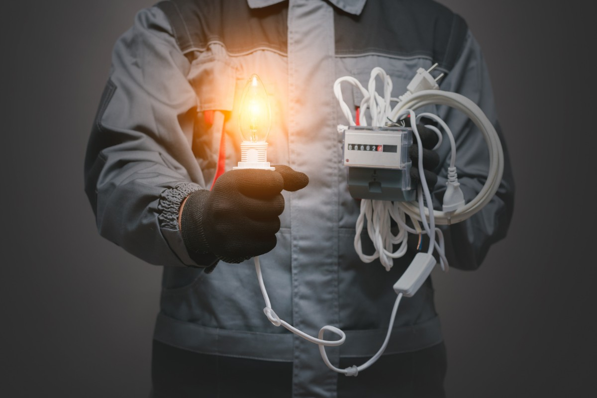

Grove Spark Electrical Services has earned a trusted reputation as a go-to electrician in St Ives and across Sydney's North Shore. Founded by Master Electrician Joshua Grove (Licence 363893C), the company brings over ten years of hands-on experience to every residential and commercial project. Joshua and his fully licensed team have built their name through transparent quoting, quality workmanship, and genuine care for every client they serve. Whether you need a switchboard upgrade, LED lighting installation, or emergency electrical repair, electrician st ives delivers the professionalism St Ives families expect. Visit Grove Spark Electrical Services at Unit 5/1 Talavera Rd, Macquarie Park NSW 2113 or call 0484 301 155 today
What Should St Ives Homeowners Look for in an Electrical Contractor?
Choosing the right electrician in St Ives begins with verifying credentials. Every contractor working in New South Wales must hold a current electrical licence issued by NSW Fair Trading, and you should never hesitate to ask for proof. A Master Electrician designation, like the one held by Joshua Grove at Grove Spark, signals advanced training and a commitment to the highest industry standards. Beyond licensing, look for contractors who carry comprehensive insurance, provide written quotes before starting work, and are willing to explain the scope of every job in plain language. learn more about our North Shore electrical team

How Do You Verify an Electrician's Licence in St Ives, NSW?
Confirming a contractor's credentials is straightforward and takes only minutes. NSW Fair Trading maintains a public register where you can search by licence number or business name. For Grove Spark Electrical Services, Licence 363893C is always available on request and verifiable online. A licensed electrician in St Ives will carry their licence card on the job and present a Certificate of Compliance after completing any regulated electrical work. That certificate is your assurance that wiring, connections, and safety devices meet the current Australian Standards, which is especially important for older North Shore homes undergoing renovation or rewiring.
Which Electrical Services Matter Most for North Shore Homes?
Properties across Ku-ring-gai and the broader North Shore share common electrical needs shaped by building age and family lifestyle. Switchboard upgrades remain one of the most requested services because many homes in St Ives and Turramurra still operate with outdated ceramic fuse boards that cannot handle modern electrical loads. Safety switch installation and RCD testing protect against electrical shock, while surge protection guards sensitive electronics from power spikes that travel through the grid during storm season. electrician wahroonga professionals like Grove Spark also see strong demand for EV charger installation as North Shore families transition to electric vehicles.
What Questions Should You Ask Before Signing a Quote in St Ives?
A detailed quote is the foundation of any successful electrical project. Ask your contractor whether the quoted price includes all materials, labour, and compliance certificates. Clarify the expected timeline, particularly if the work involves switchboard replacement or full rewiring, because these jobs may require a temporary power shutdown. Enquire about warranty terms on both parts and workmanship. Experienced contractors on the North Shore will also advise whether your job requires council notification, which is common for significant electrical alterations in the Ku-ring-gai council area. Grove Spark provides itemised quotes that cover every element, so St Ives homeowners know exactly what they are paying for.

Why Do Pymble and Turramurra Residents Choose St Ives Electricians?
Proximity matters when you need fast, dependable electrical service. Pymble and Turramurra sit just minutes from St Ives along the Pacific Highway corridor, which allows locally based contractors like Grove Spark to arrive on site quickly for both scheduled appointments and emergency electrician call-outs. Residents in these neighbouring suburbs benefit from the same quality of service and local expertise that St Ives families have relied on for over a decade. The shared geography also means your contractor already understands the typical building styles, soil conditions affecting underground cabling, and council requirements that apply across the entire Upper North Shore.
How Can You Compare Electrical Contractor Pricing on the North Shore?
Price comparison is important, but the cheapest quote rarely delivers the best outcome. Start by requesting at least three written quotes for the same scope of work. Compare what each contractor includes: some will bundle compliance certificates and post-installation testing, while others treat these as extras. Look at payment terms and whether the contractor charges a call-out fee for initial inspections. On Sydney's North Shore, a reputable electrician in St Ives will stand behind their electrical services pricing and will never pressure you into on-the-spot decisions. Grove Spark, for example, offers obligation-free assessments that give St Ives homeowners clarity before any work begins.
What Red Flags Should You Watch for When Hiring an Electrician?
Not every contractor operating in the St Ives area meets the standard that North Shore homeowners deserve. Be cautious of any electrician who refuses to provide a written quote, cannot produce a current licence, or insists on cash-only payment. Watch for vague job descriptions that leave room for unexpected charges. If a contractor suggests skipping the compliance certificate to save you money, that is a serious red flag — the certificate is a legal requirement and your proof that work has been completed safely. In the Ku-ring-gai region, word of mouth and electrician north shore sydney verified reviews remain the most reliable way to identify trustworthy contractors. Ready to find the right electrician in St Ives? Contact Grove Spark Electrical Services at 0484 301 155